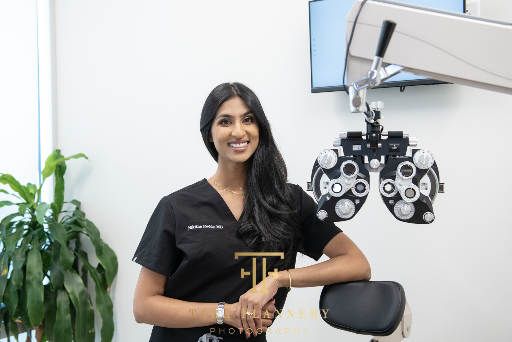

Astigmatism Correction
A toric intraocular lens is engineered with different optical powers across its meridians — allowing it to correct astigmatism at the same time as cataract surgery, delivering sharper, more precise vision without an extra procedure.

The Technology
Astigmatism occurs when the cornea or lens is shaped more like a football than a sphere — with unequal curvature across different meridians. This causes light to focus at two different points rather than one, producing blurry or distorted vision at all distances.
A toric IOL is a specially designed intraocular lens with different powers built into different axes of the lens. When precisely aligned during cataract surgery, it neutralizes the astigmatic error of the cornea, producing dramatically sharper uncorrected vision than a standard monofocal lens can achieve in an astigmatic eye.
At Soni Vision Institute, toric IOL alignment is guided by preoperative corneal mapping and, where indicated, laser-assisted surgery for the most precise rotational placement possible.
Address both cataracts and astigmatism in a single surgical procedure — no additional laser or corneal surgery required.
Many toric IOL patients achieve clear distance vision without glasses — a significant improvement over uncorrected astigmatism.
Toric lenses must be aligned to the correct axis during implantation. We use advanced corneal topography and intraoperative guidance to ensure accuracy.
Once implanted and healed, a toric IOL provides stable, long-lasting astigmatism correction without the maintenance of contact lenses or the limitations of glasses.
The Process
Precise preoperative planning makes all the difference with a toric lens. Here is how we ensure the best possible outcome for every patient.
Advanced corneal topography and biometry precisely measure the shape, curvature, and axis of your astigmatism. This data determines which toric power to use and exactly where to align the lens during surgery.
During surgery, the toric IOL is carefully rotated to the correct axis within the capsular bag. Intraoperative aberrometry and digital guidance confirm proper alignment before the procedure concludes.
Most patients notice a dramatic improvement in vision clarity within the first 24–48 hours. Astigmatism-related blur and distortion are typically markedly reduced from the day after surgery.
Toric IOLs are designed to stay in position for life. As the eye heals over 4–6 weeks, vision continues to sharpen and stabilize — with the vast majority of patients maintaining excellent uncorrected distance vision.
Common Questions
Straightforward answers to what patients ask most about astigmatism correction and toric IOLs.
Astigmatism is a common refractive error caused by an irregular curvature of the cornea or lens. Rather than being perfectly spherical, the eye is shaped more like a football — with one meridian steeper than the other. This causes light to focus unevenly, resulting in blurry or distorted vision at all distances. It is extremely common and can be corrected with glasses, contact lenses, or — during cataract surgery — a toric IOL.
For most patients, yes — toric IOLs significantly reduce or eliminate astigmatism-related blur. The degree of correction depends on how much astigmatism you have and whether it is primarily corneal (correctable with a toric IOL) or lenticular. We perform a thorough preoperative evaluation to determine the expected outcome for your specific eye. Most toric patients achieve very good uncorrected distance vision and require little or no correction for distance activities.
Yes. Several premium IOL platforms offer toric versions of multifocal and EDOF lenses, allowing simultaneous correction of astigmatism and presbyopia. This combination can provide excellent near, intermediate, and distance vision without glasses — even in patients with significant astigmatism. We will evaluate your corneal measurements and discuss whether a multifocal toric is appropriate for your goals and anatomy.
Schedule your evaluation with Houston's highest-rated surgical team.